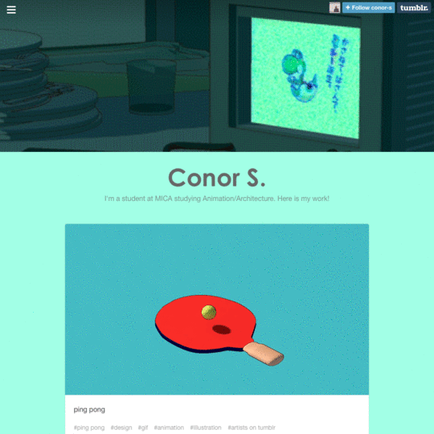
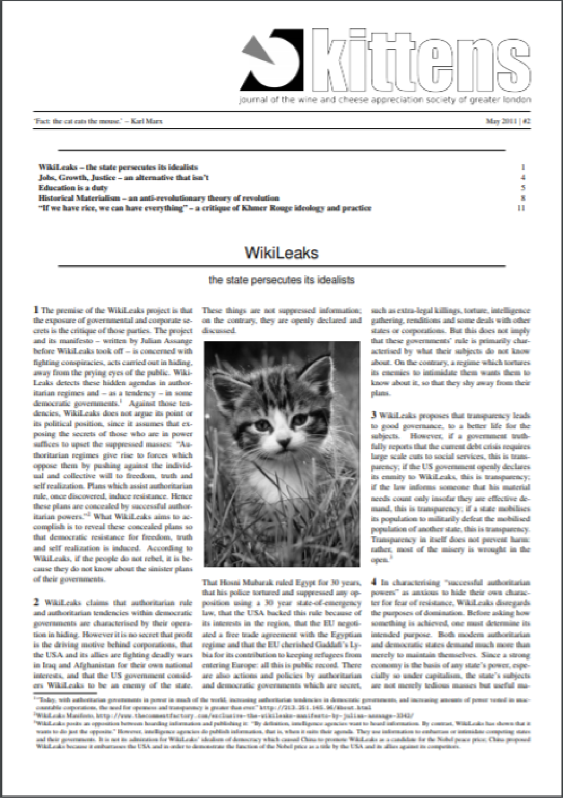
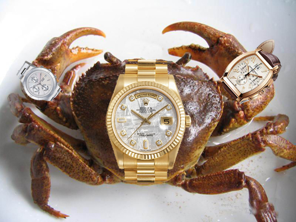

Memes: weapons of mass
political discourse
When one thinks about memes one does not simply think off them as “small cultural units of transmission, analogous to genes, which are spread from person to person by copying or imitation”. One thinks off them as funny images seen online with some rememberable text over them. But memes are so much more than that.
Memes are indeed culture units, a unit of information that leaps from brain to brain. They can carry jokes, but they are also capable of carrying important social and political messages.
In the 2008 presidential elections in the United States of America internet memes played an important role as forms of political advocacy, as in China their role is more off a subversion one against the current regime.
Key concepts
Distribution in
a Digital Era
"Of course, this collision between hard and soft delivery methods goes beyond the world of books: politics, economics, health, even human happiness, are affected as the online delivery of everything from services to information supersedes traditional types of delivery.
How else can we explain the election of Trump? (...) the most chilling facto to emerge from this investigation was that at the control centre of the Trump digital election campaign, in an anonymous building is San, Antonio, Texas, employees of Facebook, Google and Youtube were seconded to make 'delivery system' function using their online platform. It's that phrase - 'delivery system' - that really chills the soul.»
«Individual psychology can be altered merely by sending Facebook users positive or negative messages. What makes it worse is that it is facilitated by us, the users of the Internet. No force is involved. No coercion is needed."
Source: Adrian Shaughnessy. 2018. “Weightless Data: The New Heavy Freight”. In Distributed, David Blamey & Brad Haylock (eds.), 52-56.
Poor image
"Poor images are thus popular images—images that can be made and seen by the many. They express all the contradictions of the contemporary crowd: its opportunism, narcissism, desire for autonomy and creation, its inability to focus or make up its mind, its constant readiness for transgression and simultaneous submission.(...) In this light, perhaps one has to redefine the value of the image, or, more precisely, to create a new perspective for it. Apart from resolution and exchange value, one might imagine another form of value defined by velocity, intensity, and spread. Poor images are poor because they are heavily compressed and travel quickly. They lose matter and gain speed. But they also express a condition of dematerialization, shared not only with the legacy of Conceptual art but above all with contemporary modes of semiotic production."
Source: Hito Steyerl (2013). “In Defense of the Poor Image.”“In Defense of the Poor Image.” In The Wretched of the Screen, 2013. pp. 31-45. Berlim: Sternberg press.

«The project visualizes the trail created by a single digital image while traveling through a social platform that transforms our notion of authorship. By showing such image within the frame of each blog’s interface, the resulting videos represent a portrait of collective networking and a way to actively archive a particular modality of sharing.»
Source:Silvio Lorusso
Memes
“A meme (rhymes with dream) is a unit of information (a catchphrase, a concept, a tune, a notion of fashion, philosophy or politics) that leaps from brain to brain. Memes compete with one another for replication, and are passed down through a population much the same way genes pass through a species. Potent memes can change minds, alter behavior, catalyze collective mindshifts and transform cultures. Which is why meme warfare has become the geopolitical battle of our information age. Whoever has the memes has the power.”
Source: Reinsborough, P. and Canning D. (2017). "Memes". Re:Imagining Change–How to Use Story-based Strategy to Win Campaigns, Build Movements, and Change the World. p.36.
“A term introduced by the biologist Richard Dawkins in his 1976 book The Selfish Gene. Dawkins defined memes as small cultural units of transmission, analogous to genes, which are spread from person to person by copying or imitation. Examples of memes in his pioneering essay include cultural artifacts such as melodies, catchphrases, and clothing fashions, as well as abstract beliefs."
Source:Shifman, Limor (2014). Memes in Digital Culture. Cambridge: MIT press.
“Memes are units of culture and behaviour, which survive and spread via imitation and adaptation” (Metaheaven)
Internet Meme
"(a) A group of digital content units sharing common characteristics of content, form, and/or stance. For instance—photos featuring funny cats with captions share a topic (cats), form (photo + caption), and stance (humor). (b) These units are created with awareness of each other—the person posting the “cat with caption” image builds on the previous cats in the series. (c) These units are circulated, imitated, and/or transformed via the Internet by many users. Internet memes are multiparticipant creative expressions through which cultural and political identities are communicated and negotiated."
Internet memes assume a new role in deliberative processes, providing a polyvocal “meeting space” between opposing camps. In this sense, they differ from political jokes, often told in intimate gatherings with like-minded others.
Source:Shifman, Limor (2014). Memes in Digital Culture. Cambridge: MIT press.
Virality
A diffusion process in which a certain message (such as a catchphrase, video, or image) spreads from one person to another via digital and social media platforms. The process is characterized by great speed (the number of people exposed to the “viral” message increases dramatically in a short time), and with broad reach (achieved by bridging multiple networks). The propagated message is often defined as “viral content” (e.g., “viral video”). When viral content lures user-created derivatives in the form of re-mix or imitation, it can be described as “memetic.”
Source:Shifman, Limor (2014). Memes in Digital Culture. Cambridge: MIT press.
The power of humor
Jokes
"The joke is an open-source weapon of the public"
"Reality management, or sense-making, is establishing a frame in which certain things can be claimed not to have happened. Jokes are by virtue of their disruption of an existing order of “sense-making” very unwelcome guests in an age of austerity."
"Jokes are an active, living and mobile form of disobedience."
"As opposed to “reasonable debate”, jokes are political weapons that deny an opponent control over the terms of the exchange by ignoring those terms entirely. Jokes are a protocol weapon of democracy, unsettling the structure of the encounter between oppressor and oppressed."
Source: Metahaven (2014). “Jokes”, Can Jokes Bring Down Governments?: Memes, Design and Politics, Russia: Strelka press.
nonsense
"Further study into the nature of self-referentiality was done by Susan Stewart in her legendary book, Nonsense. For Stewart, the category of “nonsense” is opposed to the category of “common sense making” through which what we think of as reality is established. By categorising something as “nonsense”, “the legitimacy and rationality of sense making was left uncontaminated, unthreatened.” It is not difficult to see a fundamental political procedure at work here. Isn’t it exactly the day job of most politicians to manage reality and sense-making, deciding what others get to see as nonsense and what as legit?"
"Nonsense also involves an element of “play”."
"Play involves the manipulation of the conditions and contexts of messages and not simply a manipulation of the message itself. It is not, therefore, a shift within the domain of the everyday lifeworld: it is a shift to another domain of reality."
Source: Metahaven (2014). “Jokes”, Can Jokes Bring Down Governments?: Memes, Design and Politics, Russia: Strelka press.
The LOLcat
"The inherent ridiculousness of Boromir and Rick Astley qualifies an indifference to their original meaning, which is why the Rickroll meme is disruptive as a form while its “content” can consist of pure Stock, Aitken and Waterman."
"But they may lose that sense of innocence. A good example of an innocent image supercharged by the internet is the Lolcat. Lolcats are pictures of cats, superimposed with texts."
"Cats are today’s political animals. Every era, every generation, has to construct and reconstruct its political beliefs, and subsequent visuals, out of the stuff that surrounds it at any given moment."
"For example, the cutting-edge Leftist political journal Kittens, (...) features radical leftist writing only alongside photographs of cute kittens. The strangest thing is that this combination further radicalises the message; Kittens acknowledges head-on the self-politicisation of an information space in which we were supposed to merely enjoy ourselves. In the absence of a “properly political” visual expression at hand, the stuff that is readily available, the internet’s equivalent of cardboard, gets politicised just like Astley became the “Rickroll.” In other words, every bit of visual information on the internet can, through the spectre of self-politicisation, become revolutionary, because it exists in a shared gene pool. Cats are especially useful and relevant."
Source: Metahaven (2014). “Jokes”, Can Jokes Bring Down Governments?: Memes, Design and Politics, Russia: Strelka press.

"every generation will construct new, “political” beliefs out of it; out of all kinds of stuff, which seemed initially non-political."(Metaheaven)
Getting Political
Participatory Media
“Due to the prevalence of politically-themed memes across multiple social media platforms, the images are becoming an intriguing foundation for rhetorical analysis.”
“Additionally, the accessibility of graphic communication technology for the public to generate memes invites a wave of cultural participatory media.”
“younger generation’s ease of access and quick understanding of technology will turn into forms of activism through the usage of social media and the creation of memes—today’s digital propaganda”
Source: Gutierrez, Morgan G. (2017). From Print Propaganda to Meme Activism: The Evolution of Graphic Communication and its Effect on Socio-Political Climates and Methods of Activism.
“Harnessing the power of memes is particularly important in our fragmented media environment where attention-challenged audiences are rarely able to seamlessly consume our entire campaign story. Creating effective memes that carry the core framing of the story and invite audiences to learn more is an essential way to spread our messages and build our base of support.”
Source: Reinsborough, P. and Canning D. (2017). "Memes". Re:Imagining Change–How to Use Story-based Strategy to Win Campaigns, Build Movements, and Change the World.
New media political participation
"Whereas traditional political-science accounts of participation have focused on easily measurable practices, such as voting or joining political organizations, in recent years the perception of what constitutes political participation has been broadened to include mundane practices, such as commenting on political blogs and posting jokes about politicians."
"New media offer appealing and convenient ways to stimulate participatory activity, especially among younger citizens who have been the least likely to participate in formal politics."
"New media proved to be pivotal not only in top-down political campaigns, but also in grassroots social and political movements."
Source: Shifman, Limor (2014). Memes in Digital Culture. Cambridge: MIT press.
"(...)they are energized by the digitally coordinated actions of millions of ordinary people."
TYPES OF
INTERNET-BASED
POLITICAL MEMES
Memes as forms of persuasion or political advocacy
Thus, whereas typical party-sponsored ads had an average of 55,000 views and typical candidate-sponsored ads had just over 60,000, interest-group-sponsored ads yielded 139,000 views, citizen-designed ads averaged 807,000 views, and ads created by other entities (mostly media companies, small news organizations, groups of bloggers, or small video production groups) averaged a startling 2.5 million-plus views.
Interest groups and other nontraditional actors who produced the 2008 virals were established organizations backed by financial and social resources.
The success of this video led Kevin Wallsten to explore the factors and actors that enhanced its spreadability.
Their study thus demonstrates that a small group of powerful actors has a large influence on the process of viral diffusion."
Source: Shifman, Limor (2014). Memes in Digital Culture. Cambridge: MIT press
Memes as Political Action and Discourse
“connective action,” is based on personalized content sharing across media networks. Connective action emerged in an era in which formal organizations’ influence over individuals is declining and strong ties between people and the groups to which they belong are being replaced by large-scale, fluid social networks.
(...) memes serve as pivotal links between the personal and the political. Since they are based on shared frameworks that call for variation, memes allow citizens to participate in public, collective actions, while maintaining their sense of individuality. The role that memes play in connective action is thus the political manifestation of what I described in chapter 3 as the compatibility between memes and “networked individualism.(...)
I have so far differentiated between memes as dealing with persuasion, action, or discussion. Yet my brief analysis has demonstrated that in reality these functions are intertwined: political memes are often used as an amalgamation of all three.
Source: Shifman, Limor (2014). Memes in Digital Culture. Cambridge: MIT press

Memes as Democratic Subversion: The Case of China
“Over the last decade, the Internet has become an important arena for public discourse in China. (...)
Aware of the dangers this kind of subversive communication could pose to the regime, the Chinese government has been implementing an active censorship system(...). It also promotes self-censorship, obliging administrators of chat rooms, for instance, to remove potentially objectionable content. Recently the government justified such censorship as part of the endeavor to build a “harmonious society.”(...)
This resulted in a pun, as the new phrase means “river crab.” Thus, when bloggers write about “river crab,” or being “river crabbed,” they are actually talking about censorship.(...)
In a sense, this move from cyberspace to physical artifacts in the “real world” represents Internet users’ urge to deepen their shared subversive experience. At the same time, the process also signifies the power of capitalism to reinvent itself: as Wang says, “With the productive and participatory aspects of internet tools, the products have already ensured a profit because through free advertising, internet users act voluntarily as marketers.”(...)
tightly controlled political environments? In these contexts, political memes seem to be more than just a ventilation of anger and frustration; the widespread subversive meme circulation serves as a powerful public display of criticism and distrust. It breaks the facade of optimism and unity presented in official mass media, showing that things are not as “harmonious” as the party would like to present them.”
Source:Shifman, Limor (2014). Memes in Digital Culture. Cambridge: MIT press
